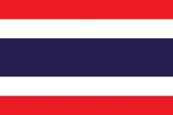
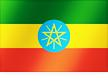

강병주 E-Portfolio

2001년 : 남양주 진건초등학교 입학
2002년 : 서울 보광초등학교
2004년 : 서울 매동초등학교
2007년 : 서울 매동초등학교 졸업
2007년 : 사사학교 입학
2013년 : 사사학교 졸업
2009년 : 충남 중졸 검정고시 합격
2010년 : 충남 고졸 검정고시 합격
2013년 : 전주대학교 한식조리학과 입학
2015년 : 전주대학교 한식조리학과 자퇴
2016년 : 대전대학교 컴퓨터공학과 입학(현재 재학)
경력 등의 대외활동은 위의 대외활동 링크를,
성적은 수강내역 링크를 통해 확인해주세요
2003

2004
2005

2006

2007
2008
2009
2010

2012
2013
2016


2017

2018